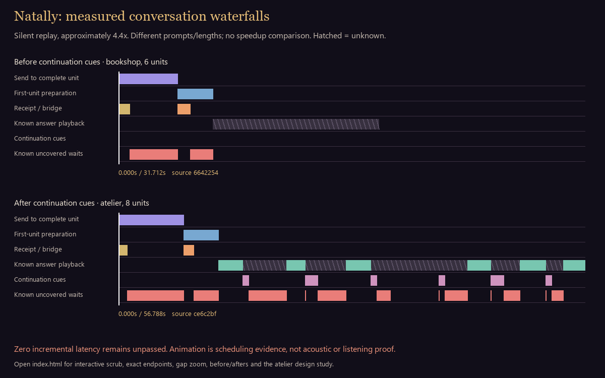
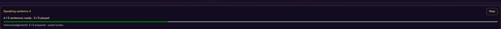
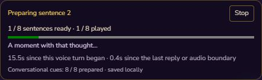
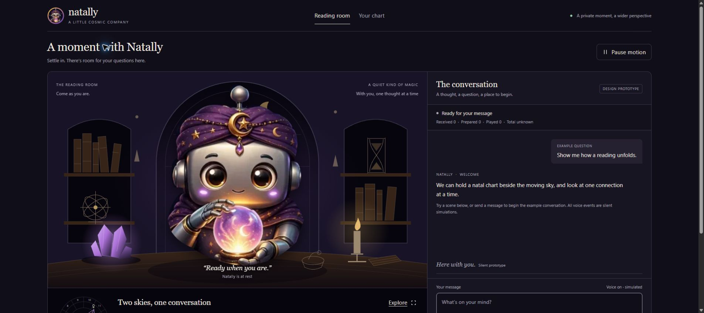
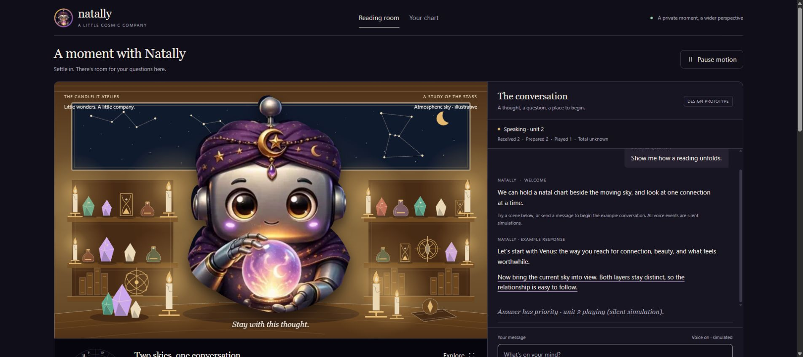
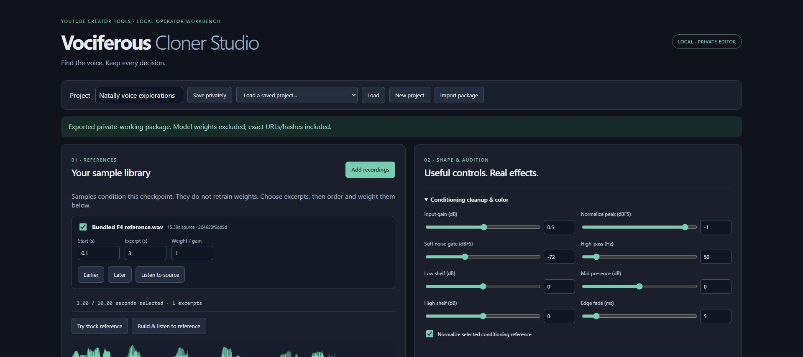

Natally · operator evidence · 17 October 2026
A voice that keeps the thread.
A report that shows the waits.
Animated waterfalls of actual production scheduling, ordinary-view before/afters, and the large-format atelier design. Silent evidence replay, with explicit boundaries between observed behavior and design demonstrations.
Zero incremental conversational latency is still unpassed. Ready cues respond promptly and continuation coverage is now observed. Remaining uncovered waits stay visible in coral. Visual atmosphere does not count as voiced coverage.

Portable animated preview. The interactive controls below use the exact timing data and show unknown intervals explicitly.Follow the actual scheduling
Choose a run, play it at real speed or accelerate, and scrub to any boundary. These runs have different content and unit counts; the comparison is behavioral, with no speedup percentage claimed. Inference/tool/transport time is grouped up to the first complete speech unit; individual later TTS durations were not recorded.
Zoom into the first later-sentence pause
The eight-sentence run's first gap was 5.355 s. A continuation cue covered 0.745 s; 4.610 s remained uncovered. The animation preserves both rather than counting the whole gap as silence or as covered.
Ordinary production view: before and after continuation cues
Actual status-region stills, with diagnostics closed. These captures show visible product state; they are not acoustic evidence.

Before · source 54e3f53
Sentence-by-sentence progress already existed. Later pauses had no continuation cue.
After · ce6c2bf
Later generation waits now select ready continuation audio, with the cue state visible in normal chat.A larger conversation with Natally
Actual Open Design artifact · GPT-6-Astra · inspected in Chrome
Warm atelier refinement: nine candles, organized shelves, constellation window and the original free-standing Natally. Use Later gap, Answer ready and Pause motion to inspect the silent interaction study.
Design proposal, not production audio policy. The prototype's suggested silent third nearby cue is unaccepted. Production keeps the zero uncovered latency requirement and ready-voice fallback. Chart positions and timelines here are illustrative; live ephemeris and actual voice are not wired to this design.
Open the full interactive atelier study
Initial inspected Open Design scene.
Refined inspected scene. Original Natally art retained; this is a prototype, not the deployed conversation.The direction is a warm candle-lit atelier, organized glimmering objects, a constellation sky, free-standing Natally, and gentle ball/gaze/hand motion. Repeated Hmm cues require variation after two or three uses. Design animation cannot certify audio continuity or live chart calculation.
A separate, private voice workbench
Vociferous Cloner Studio now lives in its own repository. Local samples, reversible subset/order edits, A/B pins, actual Chatterbox controls and WAV/JSON/ZIP provenance exports. Editing is loopback-only with a private operator session; the production consumer receives a generated reference.

Open the independent repository · Read its runtime and export evidence
Stock-only verification. Real recording/ZIP file chooser import awaits operator browser access, and audible quality/completeness remain unpassed. No test voice was promoted into the real Natally checkout.
Latest canonical cue-diversity run: source01eca4f, bundle0619090,76/76served SHA256 matches, normal16/16ready pool. Receipt8ms;2/2answer units completed; one429mslater gap covered. Initial5.134s+0.418swere uncovered. Read the new run. The two animated traces above remain their original, separately identified runs.
Read the evidence at its actual boundary
| Evidence | What it establishes | What remains open |
|---|
| Native status timestamps | Submission and actual source scheduling/settlement; completed-unit counts | Acoustic onset, internal PCM silence, prosody and listening |
| Solid answer bars | Both observed start and end for that answer | Unobserved intervals remain hatched, not invented |
| Coral uncovered bars | Known native intervals after subtracting actual scheduled cue coverage | A currently open wait is not included in finalized maximum |
| Before/after screenshots | Actual ordinary-view status changes | Different prompts/context are not a controlled benchmark |
| Atelier prototype | Actual inspected design and motion | Production integration, live ephemeris and device acceptance |
Earlier native observations · Continuation observations · Animation source data
Timing-run source ce6c2bf · Surge 1792260505489 · 57/57 served files matched SHA-256. Same immutable Chatterbox graphs, model revision and provider. Windows Chrome observations only; target phones and listening remain open.